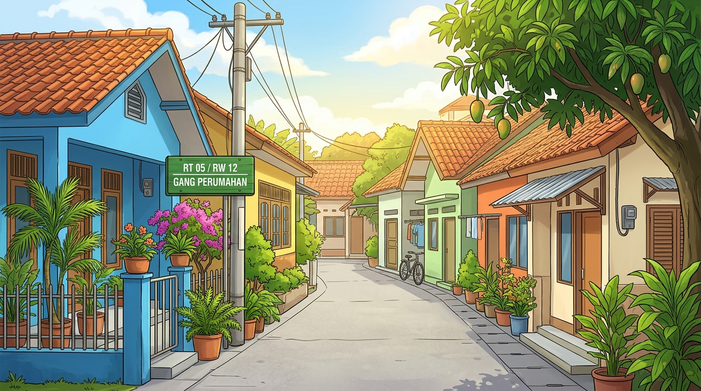
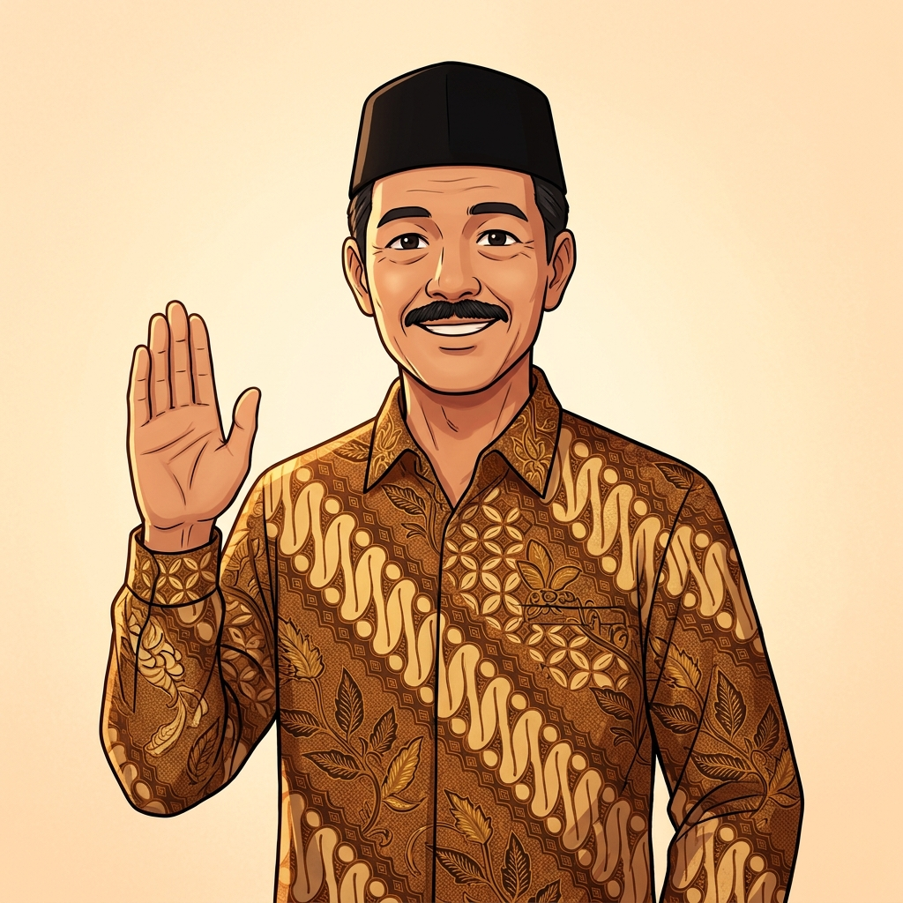
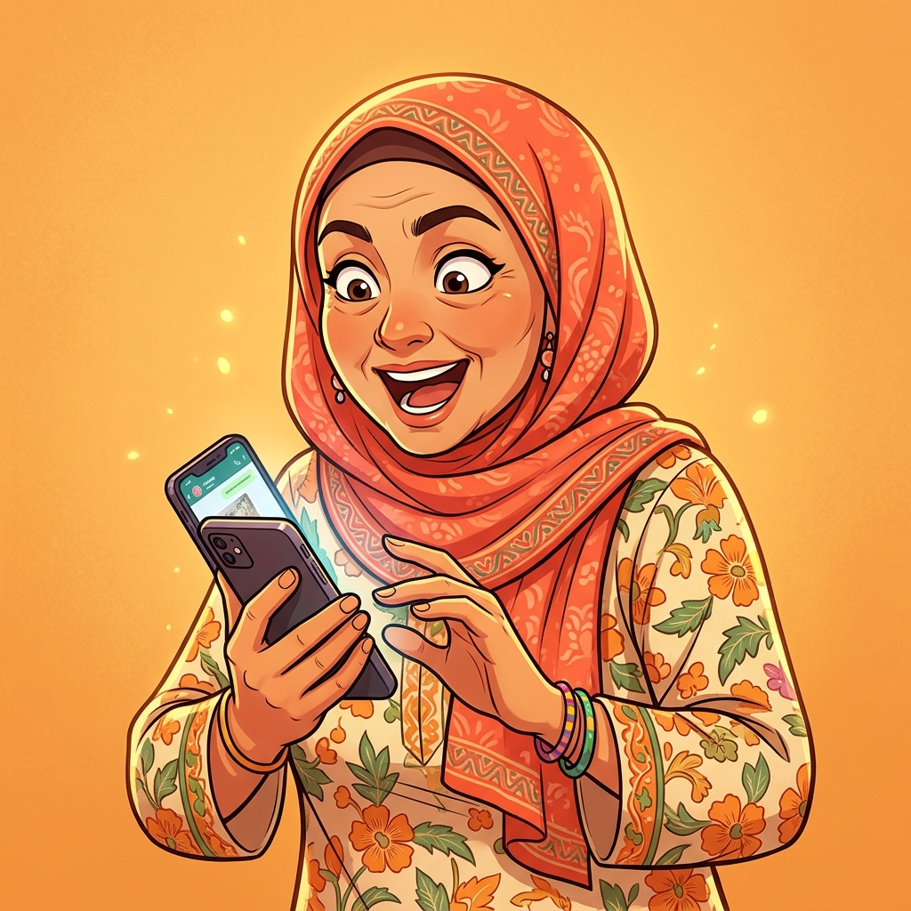
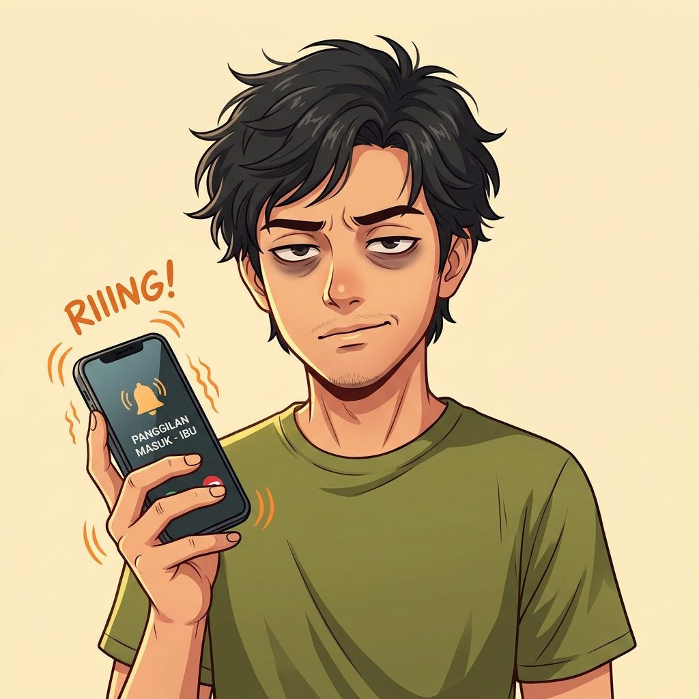
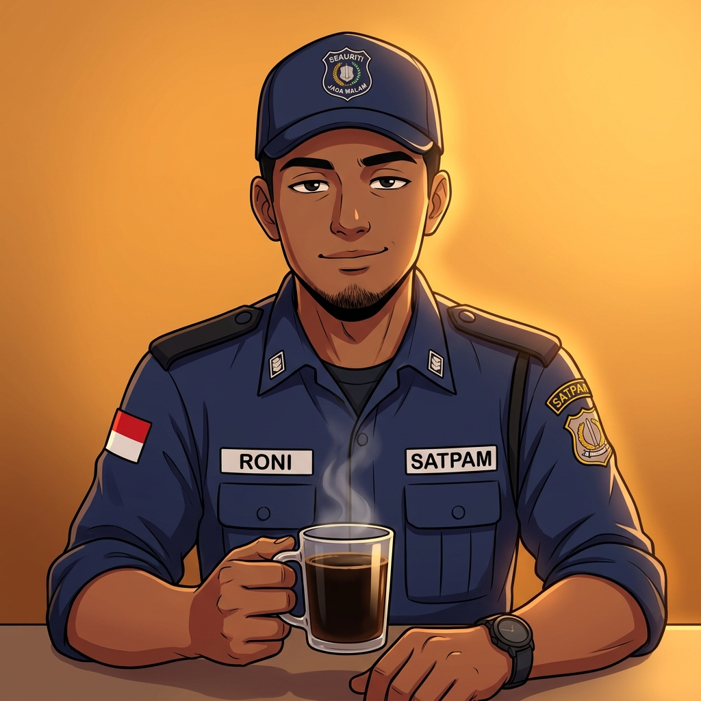
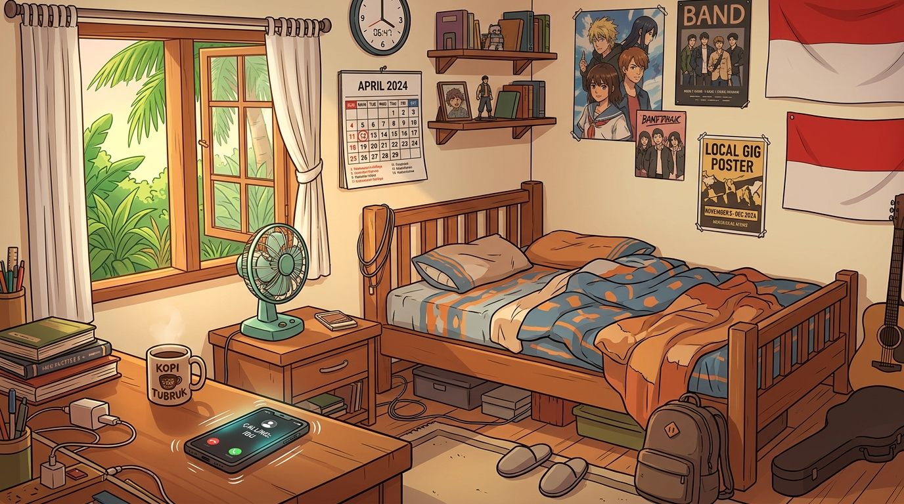

WargaChat RT 05 • Dark Comedy Simulator
ADMIN DADAKAN: Grup RT
Satu Grup RT. Lima Kepentingan. Satu Admin yang Ingin Tidur.
"Menjadi admin itu mudah. Menghadapi manusia adalah masalahnya."
Prolog — Jebakan Minggu Pagi
Minggu, 06:45 WIB
Kamar Dika — RT 05
Dika
Hari 1/3 • Pagi
Tenang
70
Percaya
50
Stres
20
RT05
Grup RT 05 Kompak
Pak RT, Bu Siti, Pak Budi, Roni, Anda
Kejadian 1: Mandat Dadakan
Menyimak percakapan grup...
Warga sedang mengetik...
Pilih Respons Dika (Admin Grup RT 05):
Evaluasi Malam • Akhir Hari 1
Kondisi Grup RT 05 Malam Ini
Ketenangan
70/100
Kepercayaan
50/100
Tekanan Dika
20/100
Jejak Keputusan Admin Hari Ini
Ending 1 dari 4
ADMIN TELADAN
Statistik Akhir & Koleksi
Ketenangan
70/100
Kepercayaan
50/100
Tekanan
20/100
Arsip Terbuka
0/10
Ending Tercapai
1/4
📊 Panel Status & Relasi Warga RT 05
1. Tiga Indikator Utama (0–100)
Ketenangan Grup
70/100
Kepercayaan Warga
50/100
Tekanan Admin (Dika)
20/100
2. Relasi Karakter Inti RT 05 (0–100)
🗂️ Arsip Kejadian & Koleksi Stiker RT
Koleksi 4 Ending
10 Arsip Kejadian Penting RT 05
5 Stiker Bapak-Bapak / Ibu-Ibu RT
💾 Simpan & Muat Permainan
⚙️ Pengaturan Permainan
🔔 Efek Suara Notifikasi Chat (SFX)
🎵 Musik Latar Lingkungan (BGM)
⚡ Kecepatan Muncul Chat